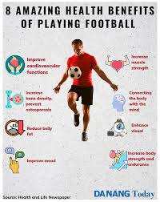

- Cardiovascular Health
One of the foremost health benefits of playing soccer is its positive impact on cardiovascular health. Soccer players cover significant distances throughout a match, often alternating between jogging, sprinting, and walking. This variety in intensity works to improve heart and lung function. Over time, playing soccer can help reduce blood pressure, lower bad cholesterol levels, and increase good cholesterol, thereby reducing the risk of heart disease, stroke, and other cardiovascular conditions.
- Increased Stamina and Endurance
Soccer players are constantly on the move. A 90-minute game requires consistent running, which gradually builds stamina and endurance. This increased aerobic capacity allows you to perform daily activities more efficiently and with less fatigue. Endurance is essential for maintaining a high level of performance throughout the game and helps improve overall physical fitness.
- Muscle Strength and Tone
Soccer engages a wide range of muscle groups, especially those in the lower body. The repetitive motions involved in kicking, running, and jumping help build muscle strength and tone in your quadriceps, hamstrings, calves, and glutes. In addition, shielding the ball, tackling, and holding off opponents involve core and upper body strength. This balance of muscle development helps you gain a well-rounded level of fitness, enhancing both power and endurance.
- Improved Flexibility and Agility
Soccer requires quick, agile movements, particularly when changing direction to evade opponents or chase the ball. These fast-paced actions enhance your body’s flexibility and agility. By regularly playing soccer, you improve your range of motion, which can prevent stiffness and increase your athleticism. Being more flexible and agile also reduces the risk of injury, helping you stay active longer.
- Burns Calories and Promotes Weight Loss
One of the significant physical benefits of playing soccer is its effectiveness in burning calories. Soccer players can burn between 400 to 600 calories per hour, depending on their weight, intensity, and duration of play. The sport’s fast-paced nature involves running at various speeds, which increases metabolism and helps reduce body fat. Combined with a balanced diet, regular soccer sessions can promote healthy weight loss, making it an ideal activity for those looking to shed pounds in a fun and engaging way.
- Better Coordination and Balance
Dribbling the ball, passing, shooting, and even defending all require exceptional hand-eye and foot-eye coordination. Soccer players need to maintain control of the ball while staying balanced during quick pivots and turns. This constant attention to movement and positioning helps improve coordination and balance. Over time, these skills translate into better physical control in other areas of life, such as walking, running, and performing daily tasks with greater precision.
- Stronger Bones
Soccer is a weight-bearing exercise, which means it stimulates bone density by placing stress on the bones through running, jumping, and kicking. This promotes bone health, particularly in the legs and hips. Regular participation in soccer can help prevent bone density loss, reducing the risk of osteoporosis and fractures later in life. For younger players, soccer also helps in the development of strong bones, contributing to overall growth and physical maturity.
- Joint Flexibility and Mobility
Soccer involves a lot of dynamic movements that require joint flexibility, particularly in the hips, knees, and ankles. As you play, you’re constantly moving these joints in various directions, which helps to improve their range of motion. Maintaining good joint flexibility and mobility is essential for preventing stiffness and promoting long-term health. Regularly playing soccer helps keep your joints supple, reducing the risk of injury and arthritis later in life.
